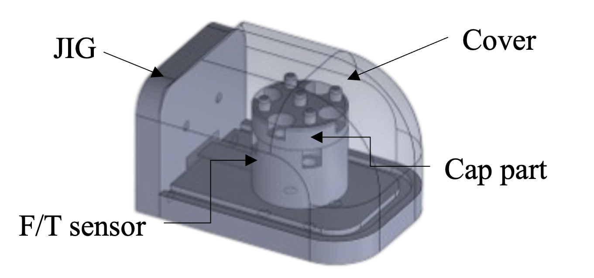
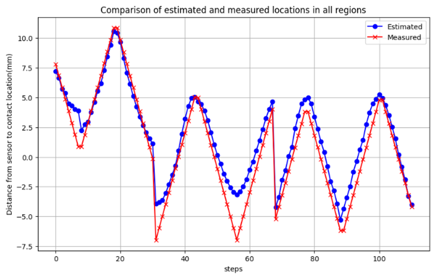
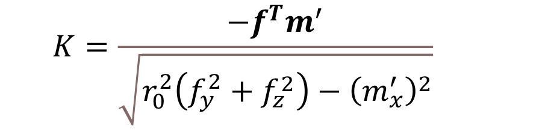

프로젝트 01 · 개요
시촉각 센싱기반 모방학습에 의한 자율조작파지기술개발
비전 · 촉각 통합 제어 프레임워크 — 2024 단일팔 → 2026 양팔 확장
기간KETI · 2024. 03 – 진행 중
- 2024 — 비전 · 촉각 센서를 하나의 제어 루프로 묶는 단일팔 제어 프레임워크 구축 (센서 I/O와 제어 연산 프로세스 분리 · 상태 버퍼 설계)
- DexMV 구조에 촉각 입력을 추가한 구성(DexMVT)으로 학습한 정책을 이 프레임워크로 실기 배포 — RoboWorld 2024 라이브 시연 (Relocate 성공률 53%)
- 2026 — 양팔 플랫폼으로 확장, 안전 장치와 강화학습 정책 배포까지 하나의 명령 경로로 통합

프로젝트 02 · 개요
숙련된 로봇 조작 및 파지 성능을 지원하기 위한 평가방법 개발연구
Peg-in-Hole 모방학습 프레임워크 — 텔레옵 수집부터 촉각 기반 삽입까지
기간KETI · 2024. 03 – 진행 중
- xArm6 + Robotiq Hand-E를 SpaceMouse 6-DoF로 구동하는 텔레오퍼레이션 제어 코드 구현
- 로봇 · 그리퍼 상태와 RealSense 프레임 동기 기록 · 시연 데이터셋 수집
- Diffusion Policy · flow matching 정책 학습 및 실기 롤아웃
- AutomationWorld 2026 라이브 시연 (2026. 03)

요소기술 02 · 설계 · 결과
6축 F/T 센서 내장 손끝 설계와 접촉 위치 추정
기간KETI · 2024. 05 – 09 (완료) · ICCAS 2024 제1저자 포스터
- 문제 정의: Allegro Hand 가 파지 중 물체를 가려 비전 기반 자세 추정(FoundationPose 등)이 끊김 — 가려진 구간을 접촉 정보로 메우는 것이 목적
- Cap part 는 법선 · 전단력 측정을 돕는 돌기 형상, Cover 는 실리콘 러버(Shore A50) 3D 프린팅 — 평면은 안정 접촉, 측면 곡률은 굴림 조작용
- 손끝(40 × 45 × 28 mm) 내부에 6축 F/T 센서 1개(AFT20-D15)만 두고 가변 곡률 + 평면 영역을 함께 갖도록 형상 설계 — 촉각 센서 배열 미사용
- 검증: UR5e 로 이동시킨 end-tool 접촉 위치를 기준값으로 사용 — 곡률 영역 3개에서 영역당 약 40점, 1 mm 간격 인가 (비변형 축 데이터 기준)
- 평균 오차 0.85 mm — end-tool 접촉면 반경 1.5 mm 대비 · 접촉 위치 추정의 단독 검증까지 (자세 추정 파이프라인 통합은 미수행)
- 한계: 센서에서 접촉점이 멀수록 오차 증가 — 손끝 변형 영향, 설계 개선이 다음 과제



요소기술 02 · 추정 원리
[힘 · 토크 기반 접촉점 산출식]

손끝 곡률 반경 r0 를 반영하는 계수 K 측정 힘 f · 토크 m′로부터 3-D 접촉점 c를 직접 계산
측정 힘 f · 토크 m′로부터 3-D 접촉점 c를 직접 계산- 입력은 6축 F/T가 측정한 힘 f 와 곡률 중심 기준으로 옮긴 모멘트 m′ — 접촉면 곡률 반경 r0 가 계수 K에 들어감
- 접촉면을 곡률에 따라 3개 영역으로 나누고, 각 영역의 r0 로 곡률 중심 기준 c를 계산한 뒤 센서 좌표계로 변환
- 같은 식이 곡면과 평면을 함께 다루므로 접촉 시나리오마다 알고리즘을 바꾸지 않음
- 전제: 단일 접촉점 · 커버 변형 없음 — 센서에서 멀어질 때 오차가 커지는 원인도 변형